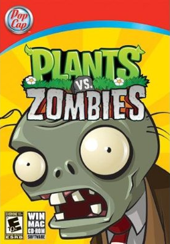

Plants v.s. Zombies

| Release Year/s | Platform/s |
| 2009 | Windows, OS X |
| 2010 | iOS Xbox Live Arcade |
| 2011 | Nintendo DS PlayStation Network DSiWare Android Amazon AppStore Windows Phone |
| 2012 | PlayStation Vita |
| 2013 | BlackBerry 10 |
Game Modes
The primary game mode is a single-player, multi-player and Adventure mode in which the player can earn money to spend at an in-game store to buy new seed packets and other bonuses.
The game also features extra modes that are unlocked as the player progresses through the main adventure. These include a survival game with hard or normal mode, a puzzle mode which includes I, Zombie mode and Vasebreaker mode and a selection of mini-games which include zombie-themed versions of other PopCap games like Bejeweled. The game also features a Zen garden, where players can care for plants they acquire from successes in gameplay. Players can also buy other kinds of zen gardens in the in-game store. The in-game store also carries items that help with the Zen Garden. The PlayStation Network and Xbox Live Arcade version of the game includes 5 multiplayer modes, both co-operative and competitive, additional mini-games and a virtual house where players can show off their achievements to friends.
Game Play
Plants vs. Zombies, players place different types of plants and fungi, each with their own unique offensive or defensive capabilities, around a house in order to stop a horde of zombies from reaching the house of the residents. The playing field is divided into 5-6 horizontal lanes, and with rare exceptions, a zombie will only move towards the player's house along one lane (the main exception is if it has taken a bite out of a garlic). Planting costs "sun", which can be gathered for free (albeit slowly) during daytime levels and by planting certain plants or fungi. Most plants can only attack or defend against zombies in the lane they are planted in. In later levels, players can purchase upgrades with different offensive and defensive abilities.
The game uses several different level types and layouts. The game starts out in a front yard, and progresses to nighttime levels, where the gameplay is more challenging, with no replenishing sun unless specific plants are used, the backyard is visited, with a pool added, and the final levels are nighttime pool levels (where fog fills the right half of the screen except when specific plants are used), a lightning storm level in pitch black (except when illuminated by occasional flashes of lightning), and rooftop levels (on the final level, the player must face a huge robot operated by a zombie known as Dr. Zomboss). At set points throughout the game, the player is either warned through a letter by zombies or addressed by Crazy Dave to prepare for an ambush, where the game takes on a bowling style, using Wall-nuts to bowl down zombies, or a modified version of regular levels, where random plant types come up on a small selection, and the player can use the plants without spending sun.
The player starts with a limited number of seed pack types and seed pack slots that they can use during most levels. The number of slots can be increased through purchases with in-game money. At the start of a level, the player is shown the various types of zombies to expect and given the opportunity to select which seed packs to take into the level. Several plants are nocturnal, such as mushrooms, having a lower sunlight cost, and are ideal for nighttime levels. Certain plants are highly effective against specific types of zombies, such as the Magnet-shroom, which can remove metallic items from a zombie, such as helmets, buckets, ladders, and pogosticks.
The zombies also come in a number of types that have different attributes, in particular, speed, damage tolerance, and abilities. Zombies include those wearing makeshift armour, those that are able to jump or fly over plants, and a dancing zombie which has different designs depending on the version that is able to summon other zombies from the ground. At various points the player will be inundated with a huge wave of zombies.
If a zombie reaches the end of a lane for the first time, a lawnmower at the end of that lane will shoot forwards and destroy all the zombies in that lane. However, if a zombie reaches the end of that same lane for a second time, it will reach the player's house. When this happens the music changes and the other zombies stop moving while that zombie enters the house. Crunching sounds will be heard, accompanied by a scream and a message saying "The zombies ate your brains!". The game will then end and the player can decide whether or not they will try again.